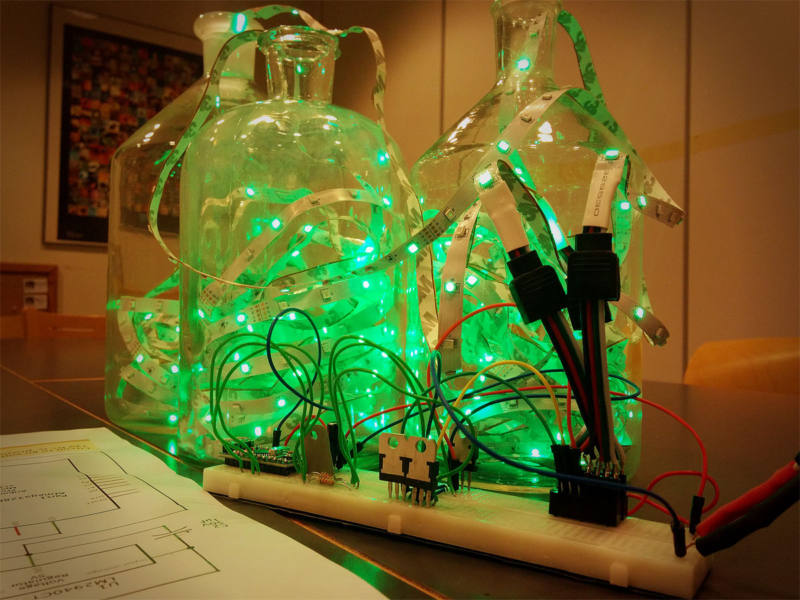

Nucleotide-Control-RGB-LEDs
 An Arduino sketch that blinks RGB LED strips according to a DNA sequence. Its purpose is to provide an extra dimension to Christmas, and other decorative, LED ligthing. Therefore, the sktech is preloaded with a gene sequence from Norway Spruce, Picea abies, so that you can put up a truly meta Christmas tree. Or, you can make a Christmas tree shape from LEDs and have yourself a minimalist abstract Christmas.
The code was developed for LED strips with separate R, G, B LEDs, but it should work just fine with combined RGB LED strips (or single LEDs), as long as you do the wiring properly. If you run a true RGB LED strip, where all the LEDs are combined under one lens, it is possible to get better transitions and more colors with very little code tweaking. The information on how the code works is contained in the code comments, so be sure to check those out in the Nucleotide-Control-RGB-LEDs.ino file.
Schematic wiring diagrams for the driving circuit are available in the repository in both .fzz and .PDF formats, with file names 'Nucleotide-Control-RGB-LEDs.fzz', and 'Nucleotide-Control-RGB-LEDs.PDF', respectively.
List Components
- 1 x Arduino Pro Nano clone (16 MHz Atmega328P)
- 3 x 5 m common cathode RGB LED strips
- 3 x 8.2 kOhm resistors
- 3 x TIP120 darlington transistors
- 1 x LM2040CT-5.0 5V Voltage regulator (a 7805 will work fine too)
- 1 x 1 uF 50 V capacitor
- 1 x 22 uF 50 V capacitor
- 1 x Nintendo GameCube 12 V power brick
- some differently colored wires (helps with keeping track on which channel is which)
To Do's before next holiday season
Real-time access to send GenBank accession numbers, so everyone can see their favourite gene, or genome, in action.
Probably Raspberry Pi integration.
Analogue knobs to change the variables controlling LED behaviour, such as gradient, speed, max_intensity et.c.
A fouth "dimension" of some sort to signal if the current nucleotide is exon or intron (coding, or non coding).
If I get a proper RGB strip I'll move on to amino acid (protein) sequences.